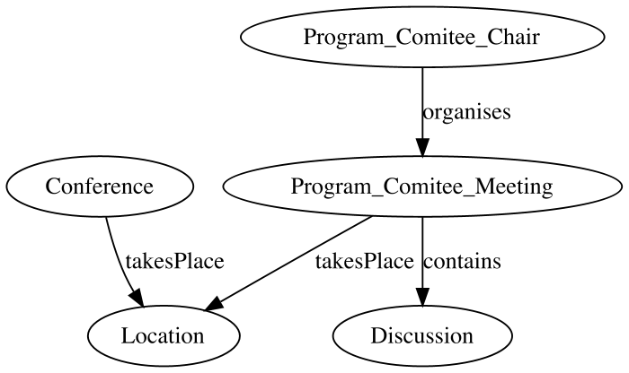
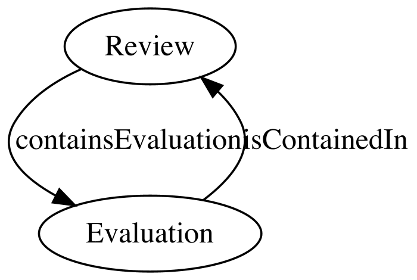
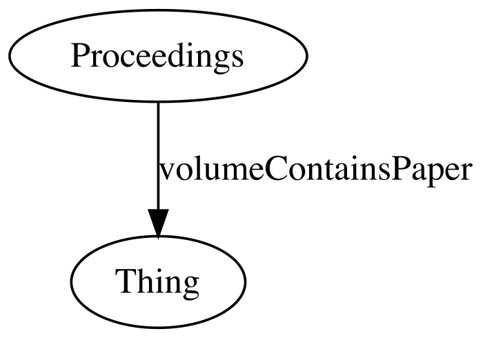

Containing - Inclusion
Component's terminology: Contained Evaluation Program Chair Meeting In is Review Conference Comitee organises volume Proceedings contains Contains Paper takes Discussion Place Location
Observed Ontology Desing Patterns

Go to the RDF/OWL implementation of the observed ontology pattern
inferred_paperdyne
Go to the RDF/OWL implementation of the observed ontology pattern
inferred_paperdyne
Terminology of the observed ontology pattern: Discussion Program Comitee Chair takes Place Location Meeting organises Conference contains

Go to the RDF/OWL implementation of the observed ontology pattern
inferred_MyReview-2
Go to the RDF/OWL implementation of the observed ontology pattern
inferred_MyReview-2
Terminology of the observed ontology pattern: contains Evaluation is Contained In Review

Go to the RDF/OWL implementation of the observed ontology pattern
inferred_ekaw
Go to the RDF/OWL implementation of the observed ontology pattern
inferred_ekaw
Terminology of the observed ontology pattern: volume Contains Paper Proceedings